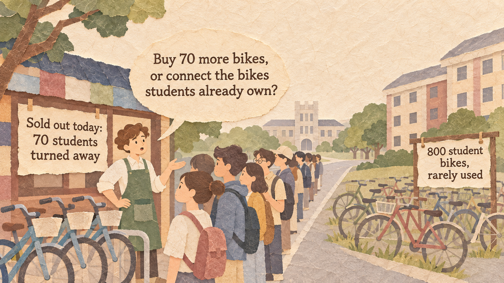
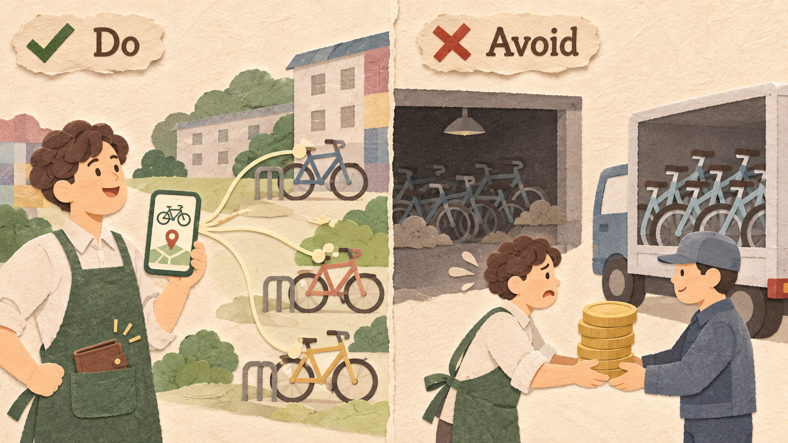
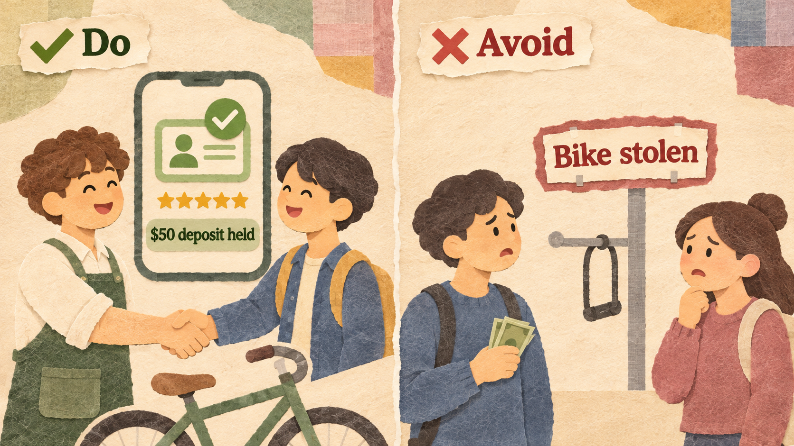
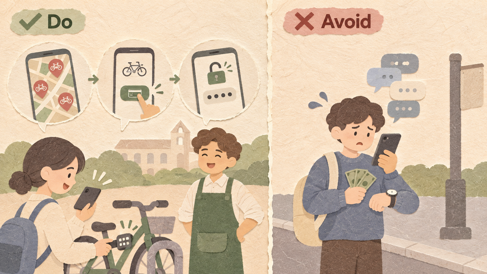
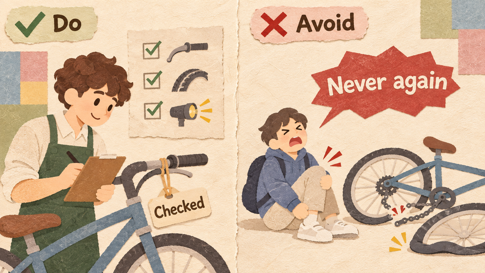

In this course you are the owner of a growing business. Each week you learn one strategy.
A business situation and one strategy in one paragraph
Words, four rules, and real companies that did it well or badly
Tools and three exercises: easy, medium, hard (with a memo)
CampusBikes is Leo's bike rental shop next to campus. Students rent a bike for $5 a day. In busy months, 70 students a day go home without a bike, while many student bikes sit unused.
| CAMPUSBIKES | VALUE |
|---|---|
| Bikes CampusBikes owns / rental price | 50 / $5 a day |
| Busy months each year | 4 |
| Students who want a bike / turned away (busy day) | 120 / 70 |
| Students who own a bike they rarely ride | 800 |
| Cost of one new bike | $300 |
| Repair and storage, per bike | $15 a month |
A pipeline business makes or buys a product and sells it, so to grow it must buy more. A platform connects people who already have something (providers) with people who need it (users), and earns a small fee on each match. It grows by adding providers, not by buying more things, so it grows faster with less money at risk.
Look for useful things that sit idle. When you connect them, you grow without paying for every new unit.

800 student bikes sit unused. CampusBikes lists them in its app instead of buying 70 new bikes.
Calling yourself a platform but still buying or renting every asset. You carry a pipeline's costs.
A user will not rent a stranger's bike, and an owner will not lend it, unless both feel safe.

ID checks, ratings for owners and riders, a $50 deposit, and repair cover for damaged bikes.
Posting phone numbers and leaving the rest to users. After one stolen bike, everyone leaves.
The platform wins when it makes the costs of a trade much smaller than doing the trade alone.

A map of nearby bikes, one-tap payment, and a lock code. No meeting is needed.
Users must message owners, agree on a time, and meet to hand over cash. Students give up.
You do not own the product, but users blame you when it is bad. Set a few clear rules for providers.

Every bike passes a 3-point check (brakes, tires, lights). Owners with two bad ratings are removed.
Letting anyone list anything. One broken bike hurts trust in every bike on the platform.
Airbnb owns almost no homes. It connects people who have a spare room or home with travelers. At the end of 2023 it had about 7.7 million active listings, with about 6,900 employees. A hotel company grows differently: Marriott paid about $13 billion in 2016 to buy Starwood Hotels.
YouTube does not make most of its videos. People and companies upload them, and YouTube connects them with viewers and shares ad money with many creators. In 2019, YouTube said that more than 500 hours of video were uploaded every minute.
WeWork rented office space to companies and called itself a technology company. But it signed long leases on its buildings, while members could leave after a month. When demand for offices fell, it still had to pay rent. In November 2023 it filed for bankruptcy protection, with more than $13 billion in lease payments owed.
Bird put electric scooters on city streets and rented them through an app. Bird paid for the scooters itself, and many were damaged, stolen, or wore out quickly. Some cities limited scooters left blocking sidewalks. In December 2023, Bird filed for bankruptcy protection.
| EXAMPLE | RESULT | THE RULE THAT DECIDED IT |
|---|---|---|
| Airbnb | Good | Connect rooms others own, with trust tools (Rules 1 and 2) |
| YouTube | Good | Creators bring videos; easy upload (Rules 1 and 3) |
| WeWork | Bad | Rented every building itself (Rule 1) |
| Bird | Bad | Owned every scooter (Rule 1) |
Take rate = fee per match / price x 100
Pipeline: new units x cost per unit
Platform: one-time cost to set up (app, checks, insurance)
Profit = revenue per period x periods - one-time cost - running cost per period x periods
What you give up to get something you value more.
A promise, written before you start, about which result would make you change your decision.
Example: "If fewer than 30 students list a bike in the first month, we will buy 20 bikes instead."
Six businesses:
| BUSINESS | ANSWER | WHY |
|---|---|---|
| (a) Bakery | Pipeline | Makes and sells its own bread |
| (b) Parking-space app | Platform | Connects drivers and space owners |
| (c) TV channel | Pipeline | Makes its own shows |
| (d) Used-clothes website | Platform | Connects sellers and buyers, 10% fee |
| (e) Car maker | Pipeline | Builds and sells its own cars |
| (f) Home-cook app | Platform | Connects cooks and neighbors |
24 months, 8 busy months / serve 70 more students a day / each extra bike rented about 20 days a busy month
$300 per bike, plus $15 a month per bike for 24 months.
CampusBikes keeps the full $5 a day.
Owner gets $4; CampusBikes keeps $1 a day.
$3,000 once, plus $100 a month for insurance and support.
Explain pipeline and platform with provider, user, asset, and take rate.
Compare the cost of growing by buying with growing by connecting.
Compare the two plans over several periods and write a decision rule.
Van Alstyne, M. W., Parker, G. G., & Choudary, S. P. (2016). Pipelines, platforms, and the new rules of strategy. Harvard Business Review.
Coase, R. H. (1937). The nature of the firm. Economica, 4(16), 386-405.
Airbnb (2024). Fourth quarter and full-year 2023 financial results.
Tubefilter (2019, May 7). More than 500 hours of content are uploaded to YouTube every minute.
GlobeSt (2023, November 7). WeWork files for Chapter 11. CNBC (2023, December 20). Bird files for bankruptcy.